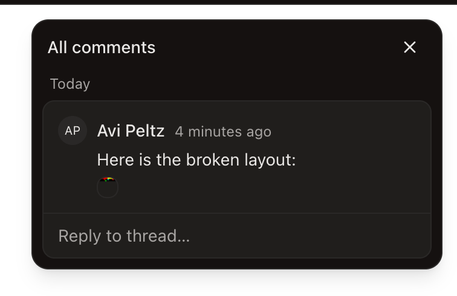
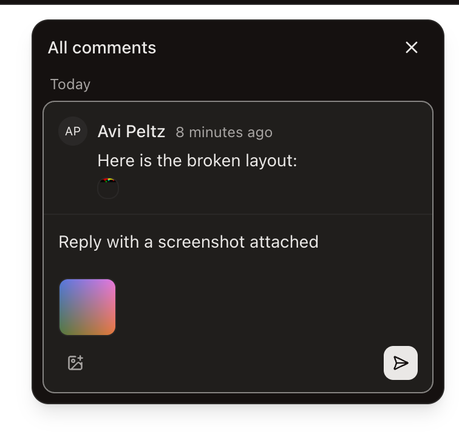
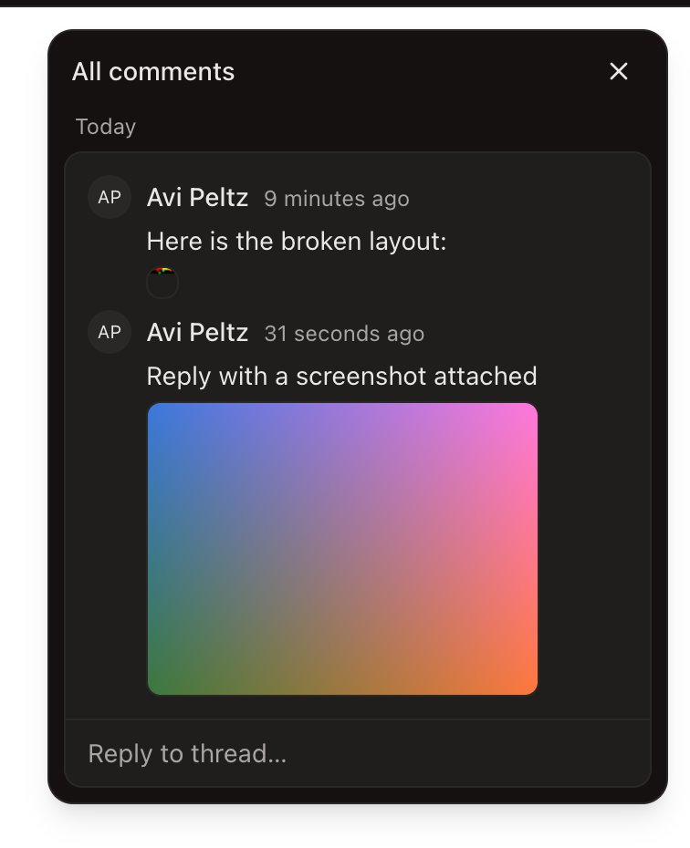

Images in page comments
Comments on pages can now carry screenshots. Paste, drop, or pick up to four images in any comment or reply; readers get inline thumbnails and a lightbox, and agents reading a thread get a fetchable URL for every image. Built, validated, and verified live in the dev app.
What a commenter gets
- Attach via the image button, paste from clipboard, or drag onto the composer — up to 4 images, 10 MB each, on new threads and replies alike.
- Uploads start the moment an image is added, with per-image uploading/ready/error states. Send stays disabled while anything is in flight; a failed upload shows a red-ringed chip you remove and retry.
- Image-only comments work — a screenshot with no words is a valid comment.
- Rendered as a thumbnail strip under the body; click opens a lightbox, Escape closes it. Mobile renders the same attachments in its comment sheets.



How it works
The storage layer had been built with this feature anticipated:
attachments.parentKind already carried
"comment", the usercontent Worker already served
/files/<fileId> behind signed tickets, and the
fileUrl helper's doc comment named comments as a
consumer. Nothing minted file tickets until now — this change is that
machinery's first producer.
image/*, size ≤ 10 MB.
pageComment.createImageUpload
pending; abandoned uploads are swept in a day.
presigned PUT → R2
pending → ready inside the comment's own transaction, so ready ⇔ attached — no state where a file is one but not the other.
one transaction
Allowed types, decided by sniffed bytes: PNG, JPEG, GIF, WebP, AVIF —
everything Chromium renders in an <img>.
Deliberately absent: SVG (a document with script) and HEIC (browsers
can't decode it). Access to an image always derives from access to
its comment's page; a file id alone is not authority to read it, and
an upload belonging to someone else, or already parented elsewhere,
is not attachable.
Cleanup
Deleting a thread — or the whole page — now detaches the comments'
files and reaps the orphans, R2 bytes included, through shared
helpers (detachAll / reapOrphanFiles).
Rewriting page-delete onto those helpers also fixed a
pre-existing leak: staged page assets were never
cleaned up when a page was deleted between staging and publish.
New environment variable
MEDIA_URL threads the media host into the API (the
Worker already had its own copy). Wired through all the places
docs/environment-variables.md demands: env schema, both
templates, turbo.jsonc, both deploy workflows, and the
setup port-allocator for per-worktree dev values.
Where it lands, per surface
| Desktop | Full composer + rendering, in the pin popover and the All-comments panel (shared packages/ui). |
| Web viewer | Same shared components; unauthenticated public views never receive comment data, so tickets never leak. |
| Mobile | Renders attachments in comment sheets. Composer upload is a follow-up (the chat composer's picker is ready prior art). |
| CLI | pages comments list prints an [image name] url line per attachment — an agent reading a bug report can fetch the screenshot. |
| MCP | pages_comments_list returns the router shape verbatim, so agent callers inherit attachments with no changes. |
Validation
| Integration tests | 8 pass against a real database: round trip with sniff correcting a lying declaration, reply + list serving tickets, HTML-behind-a-PNG-label refused, never-uploaded refused, foreign upload refused, double-attach refused, thread-delete reap, page-delete reap. |
| Unit tests | green — schema refinements (image-only comments, dedupe, caps), plus updated fixtures across cloud-client and ui. |
| Typecheck | 42/42 packages. attachments is a required field on the comment shape, so the compiler enumerated every construction site. |
| Lint · i18n | clean — seven new strings hand-translated into all 16 non-English locales; check:i18n passes. |
| Live (CDP) | verified in the real dev app: panel render through a genuine ticket, lightbox open/close, typed reply + picker attach + eager upload to ready, send, and the posted image re-served after a full app reload. Zero console errors. |
One honesty note on the live run: local dev has no object store on
R2_ENDPOINT, and the Worker's local R2 is a separate
miniflare store — so the upload leg ran against a small S3 stub and
the freshly-uploaded bytes were mirrored into the Worker's store by
hand. Everything else — app, API, database, ticket signing, media
serving — was the real stack. The presigned-upload leg against real
R2 is covered by the integration suite and, in prod, is the same
transport the shipped cloud-workspace attachment flow already uses.
Also fixed en route: a new client against an older API (comments without the field) would have crashed the comments UI — the read paths now tolerate its absence while the types stay strict.
Before this ships
1 · Set the repo secret
gh secret set MEDIA_URL — prod
https://media.supersetusercontent.com. Workflows and
env schema are wired; deploys fail env validation until the secret
exists.
2 · One prod-desktop CSP check
The renderer PUTs presigned uploads directly to the R2 endpoint,
and the desktop CSP's connect-src doesn't obviously
admit that origin. The shipped cloud-workspace attachment flow
(#7622/#7633) uses the identical renderer-side PUT — so either both
work in prod or both are broken. Worth one manual check in a
packaged build. (Dev quirk found on the way: the CSP admits
127.0.0.1 but not localhost.)
3 · Hands-on QA is one click away
The dev stack and the usercontent Worker are still running in two terminal panes of this workspace, with a seeded “Image Comments Verify” page under Pages — you can paste a screenshot into a reply right now.
Follow-ups worth their own branch
- Mobile composer upload (rendering already ships).
- Removing attachments when editing a comment.
-
The image tier of the page-card comment preview, once the
create-new-pagebranch lands.